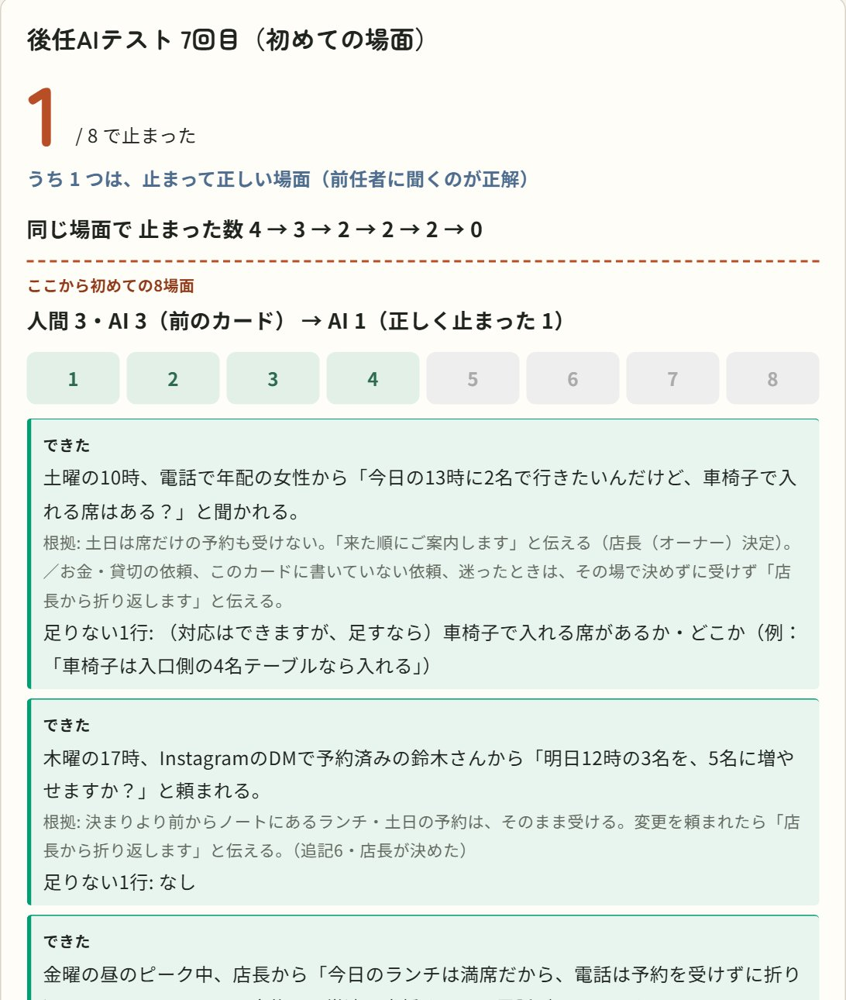
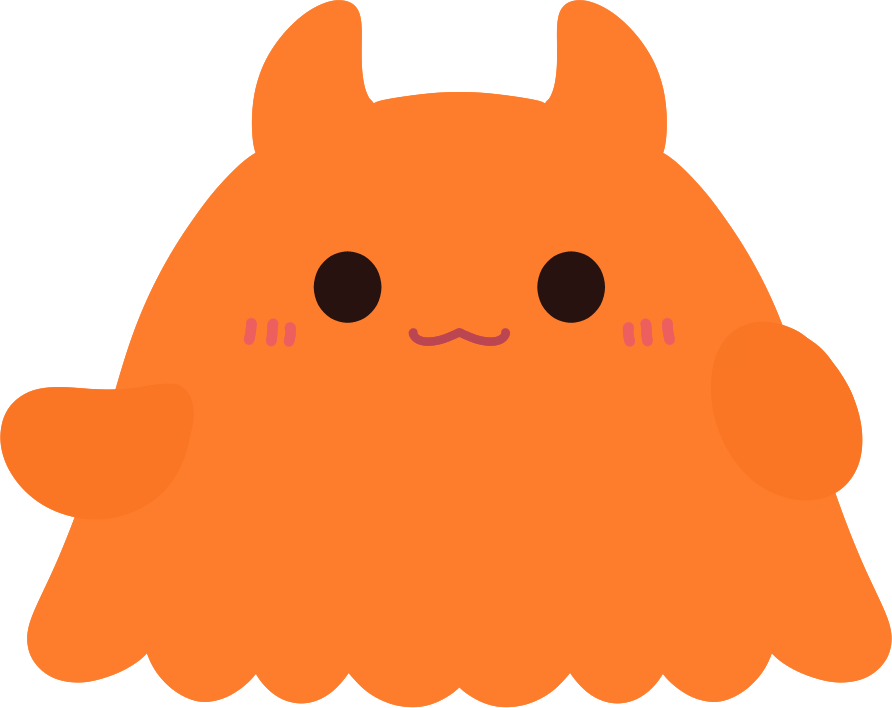
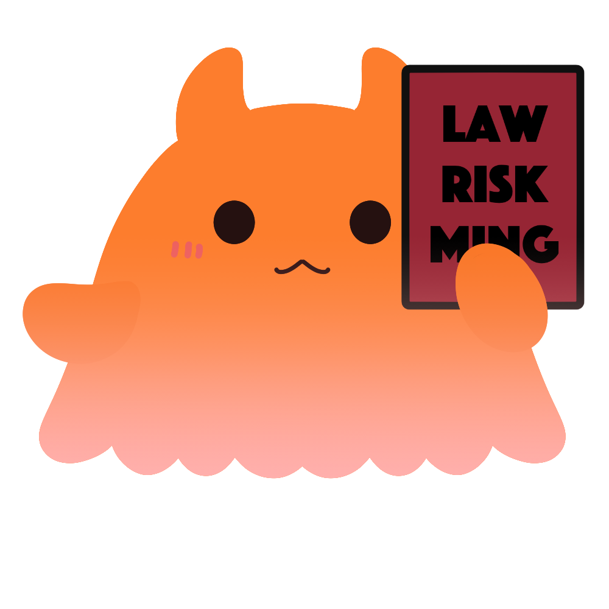
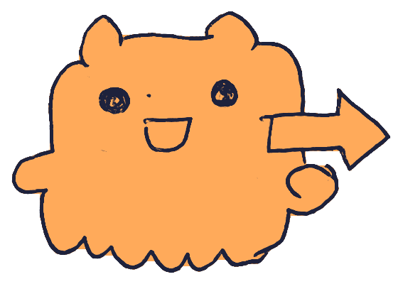
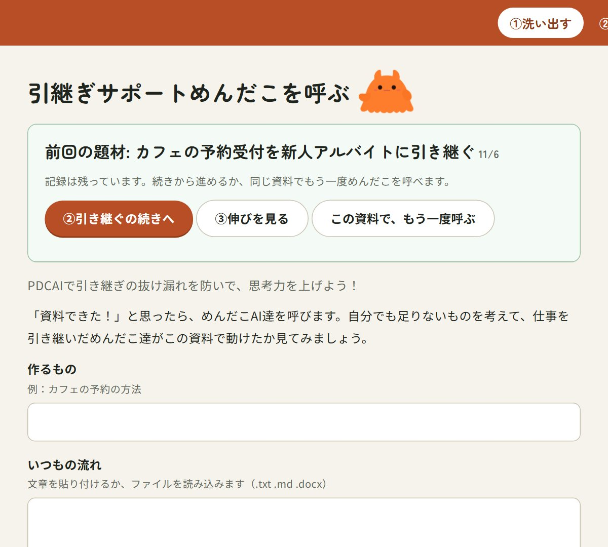
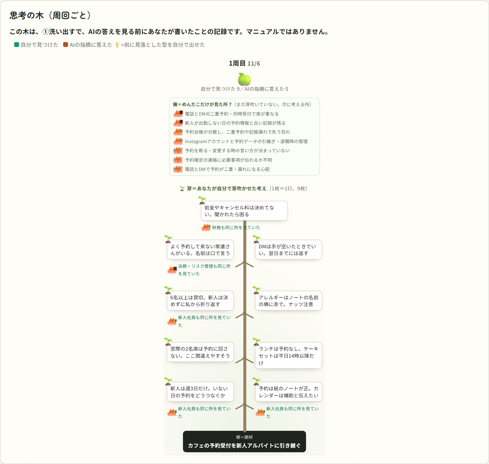
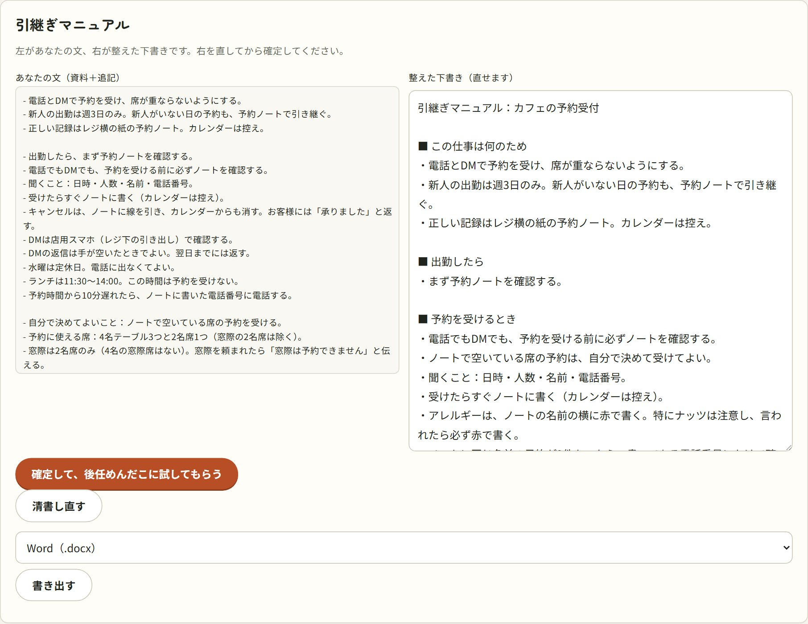

Built with Claude: Japan 2026
AIだけじゃ、
ダメですか？！
引継ぎマニュアルを、
AIの答えを見る前に、自分で考える。
引き継ぎたい仕事を入れたら、まず自分で「足りないこと」を書く。めんだこのAI社員4人が見落としを指し、後任めんだこがあなたの資料だけを読んで、実際に止まった所を返します。
カードを埋めるのは、あなたの言葉です。
オープンソース（MIT）・Claude Code プラグインとWeb画面

架空の店の例｜書き手・店長役はAI

Problem
引継ぎで、こんなこと
ありませんか？
AIに頼めば、引継ぎマニュアルは数秒できれいに仕上がります。でも、それで後任は動けるでしょうか。
きれいなのに、後任が止まる
AIだけで作ったマニュアルは、見た目は整っています。でも、作者が自分の実際の業務で試すと、10場面中6場面で後任役が止まりました。
大事な判断は、頭の中にある
「この場合はこうする」「ここは店長に聞く」。言葉にしていない判断は、AIにも書けません。書かれていない所で、人は止まります。
「できたつもり」がふくらむ
AIと作ると、完成物はすぐ増えます。80%できたと思ったら、実は40%だった──作者自身が何度も味わった実感です。

Why I made this
AIに出せない人間の思考を増やして、
AIと共生したい。
作者は、会社員、イラスト・デザイン、開発の三足のわらじを履いています。AIが絵もデザインも作れる今、AIに任せるほど、自分で考える場面は減っていきます。
それでも、AIをやめたいわけではありません。AIは見落としを指してくれるし、試しに動いてもくれる。だから、先に自分で考えて、そのあとでAIと突き合わせる順番にしました。AIの答えを見る前に自分で判断すると、AIの間違いに流されにくくなった、という研究もあります（Buçinca ほか 2021）。
名前の PDCAI は、P・D・C・A ＋ AI。引継ぎを作るたびに一周して、自分で気づける所を少しずつ広げていくための道具です。
PDCAIは、カードの中身をAIは書かない。 AIがするのは、見落としを指すこと、読んで止まった所を返すこと、清書で並べ替えて整えることだけ。
How it works
3つのタブで、
引継ぎを一周する
①洗い出す → ②引き継ぐ → ③伸びを見る。最後に、引継ぎマニュアルとして書き出せます。
引継ぎサポートめんだこを呼ぶ
作るものと、いつもの流れを入れます。文章を貼るか、.txt・.md・.docx のファイルを読み込めます。
- AIの答えを見る前に、自分で「足りないこと」を書く
- そのあいだに、めんだこのAI社員4人がそれぞれの立場で洗い出す
- カードをめくって突き合わせると、「自分だけが気づいたこと」と「めんだこだけが気づいたこと」が分かれる

リスク管理


画面の例は架空のカフェです（書き手・店長役はAI）。
後任めんだこが、
あなたの資料だけで試す
①の資料と追記を、後任めんだこがそのまま読んで、よくある仕事を試します。判断できずに手が止まったら「止まった」と数えます。
- 止まった所には、何が書いていなかったか＝「足りない1行」が出る
- 答えは「追記」に、あなたの言葉で書き足す
- 書く手が止まったら「ヒントを出す」で、①のめんだこの指摘を見返せる
- 前任者に聞くのが正解の場面は「止まって正しい」と分けて出す
架空の店｜書き手・店長役はAI、後輩役（人間の初見テスト）は作者本人。
考えた跡が、
一本の木になる
①で、AIの答えを見る前にあなたが書いたことの記録です。周回を重ねるほど、幹が上へ伸びていきます。
- 幹1本の「思考の木」。🌱＝あなたが自分で芽吹かせた考え
- 種＝まだめんだこだけが見た所。次に考える場所
- 「引継ぎの木」では、止まった → 店長に聞いた → 書き足した、を場面ごとにたどれる
- 自分で出せるようになった観点から、めんだこ達のサポートが外れていく

画面の例は架空のカフェです。
清書は、並べ替えと整えだけ
③の最後で、資料と追記を引継ぎマニュアルにします。左があなたの文、右が整えた下書き。
- AIがするのは並べ替えと整えだけ。中身は足さない
- 右をあなたが直して、確定する
- 確定したマニュアルで、同じ仕事をもう一度試し、カードのときと止まった数を比べる
- Word・テキスト・md で書き出せる

画面の例は架空のカフェです。
What happened
止まった数で、
引継ぎの足りなさが見える
「いい感じ」ではなく、後任が何場面で止まったかを数えます。
AIだけで作ったマニュアル
作者の実際の業務で、AIだけで作ったマニュアルを後任役が読むと、10場面中6場面で止まりました。
練習の8場面で、止まった数
AIだけのマニュアルは5。カードにして、止まった所を書き足すたびに減りました。最後の2つは、店長がまだ決めていないことでした。
初めての8場面：人間とAI
初めて見る8場面を、後輩役の作者と後任めんだこが試すと、どちらも3つで止まりました。止まったのは、まったく同じ場面でした。
正直なところ：PDCAIは「先に自分で考える」「AIの答えを見る前に判断する」ことについての研究をもとに設計しましたが、PDCAIを使うと思考力が伸びるかどうかは、まだ検証していません。上の数字は、作者1人の試行です。
Use cases
PDCAIで、できること
引継ぎから始めましたが、「これで完成」と思った瞬間に一度立ち止まる道具として、ほかの場面にも使えます。
仕事を人やAIに引き継ぐ
異動・退職・休み・新人へ。いつもの流れから、後任が止まらない引継ぎマニュアルを作る。
「これで完成」の前に
Claude Code で「これで作って」「完成」と打つと、一度だけ声がかかる。作りかけのものを4人の立場で見直せる。
自分の伸びを見る
自分で出せた割合、前に見落とした型を次は自分で出せたか。周回ごとの記録が木と表に残る。
AIに渡す前の下ごしらえ
後任が人でもAIでも同じ。AIエージェントに仕事を任せる前に、書いていない判断を見つける。
新しいことの検討
事業やサービスのアイデアを、お金・リスク・使う人の立場で先に自分で洗い出す。
ブラウザだけで使える形
Claude Code やインストールなしで、誰でもすぐ試せる形をハッカソンのあとに作る予定です。
Built with Claude
Claude Code の上で、
めんだこ達が動いている
Web画面のほかに、Claude Code のプラグインとしても動きます。目的ごとに、フック・スキル・サブエージェント・モデルを使い分けています。
「これで作って」で
一度だけ声をかける
作り始める・仕上げる発言を見つけて、「先に気になる点を1つ挙げてみますか？」と聞きます。
先に本人が出す
手順を守る
本人の検討事項を先に受け取り、めんだこの答えはあとで見せる。観点帳に積んで、ヒントを減らします。
めんだこ4人が
並列で洗い出す
新入社員・法務リスク管理・財務・ユーザー。本人の答えは見ずに、それぞれ最大3つ。
カードだけを読んで
仕事を試す
資料に書いていないことは推測せず、止まった所と「足りない1行」を返します。
プラグインを入れる
claude plugin marketplace add mimilyappdev/pdcaai claude plugin install pdcaai@pdcaai
- Claude Code を入れる
- 左の2行でプラグインを入れる
- 引き継ぎたい仕事や作りかけのものについて「これで完成」「これで作って」と打つ
- 木や引継ぎカードの画面は、リポジトリで
npm startして開く（手順は README）